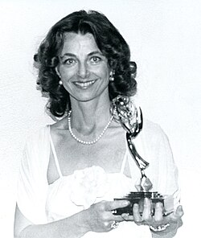

Linda Moulton Howe
Journalist and filmmaker, born 1942

A journalist whose 1980 documentary A Strange Harvest suggested that cattle mutilations were the work of extraterrestrials, with government complicity. She later produced UFO television and argues that the government works with aliens. 1
She said she had been shown secret documents but offered no evidence for them. Skeptic Joe Nickell called her a credulous journalist for presenting camera flaws as mysterious energy at crop circles. 1
Open in the interactive Watcher
Related
Sources
- Linda Moulton Howe Wikipedia